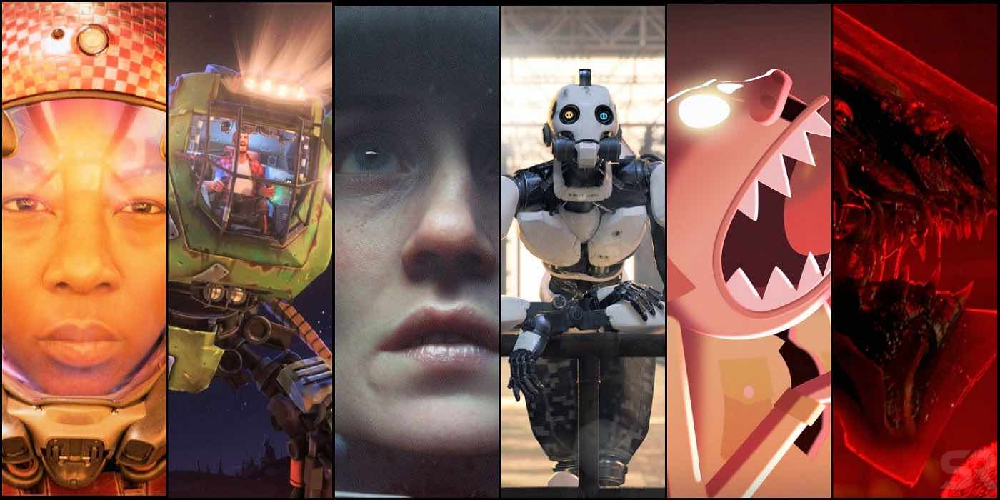

Desvendando 'Love, Death e Robots': Série de Antologia Desperta Preocupações Profundas sobre Futuros Distópicos e Impactos Tecnológicos!
Análise Detalhada Revela Narrativas Perturbadoras que Provocam Reflexões Sombrias sobre Interação Humana, Máquinas e Caminhos para um Amanhã Incerto.
Por Luana Oliveira, Analista de Tendências Sociais e Especialista em Ficção Científica
Data: 03/07/2023
A série de antologia "Love, Death e Robots" emerge como um eco alarmante das inquietações tecnológicas e sociais de nossa era moderna. Ao examinar cada episódio de forma meticulosa, a série revela um mosaico de histórias sombrias que provocam reflexões profundas sobre a interseção entre humanidade, máquinas e os rumos tumultuados que nossos futuros poderiam tomar.
"Love, Death e Robots" cativa seus espectadores com uma variedade de contos independentes, mergulhando em mundos divergentes onde amor, morte e tecnologia se entrelaçam de maneiras inquietantes. Cada episódio serve como uma cápsula de horror, maravilha e provocação, desvendando futuros distópicos e reflexões sobre a condição humana.
A série explora os riscos e benefícios das tecnologias emergentes, muitas vezes ressaltando os efeitos colaterais perturbadores que acompanham o progresso. À medida que inteligências artificiais avançam, a complexa relação entre humanos e máquinas é exposta de maneira crua. A luta pelo poder, a dependência tecnológica e os dilemas éticos são temas recorrentes que ecoam nos episódios.
Além disso, "Love, Death e Robots" lança uma luz implacável sobre a natureza humana e suas sombras mais profundas. A série aborda questões de moralidade, liberdade e identidade, revelando as consequências perturbadoras das escolhas individuais em contextos futuristas e fantasiosos.
Cada episódio, independente em sua narrativa, tece um tapete abrangente de visões sobre o que o futuro poderia reservar para a humanidade. Da exploração espacial ao controle corporativo, da realidade virtual à genética avançada, a série pinta um quadro rico em possibilidades sombrias e reviravoltas chocantes.
"Love, Death e Robots" serve como um lembrete contundente de que nossas ações presentes moldam os caminhos que nosso futuro tomará. A série estimula a reflexão sobre as consequências inevitáveis de nossas escolhas, enquanto abordamos uma realidade cada vez mais marcada pela interação complexa entre humanidade e tecnologia.
Com narrativas intrigantes e visual impressionante, "Love, Death e Robots" não apenas entretém, mas também convida a uma análise profunda sobre os dilemas morais e tecnológicos que definirão nossos destinos. Enquanto continuamos a moldar o curso de nossa sociedade, a série ressoa como um lembrete contundente de que nossas escolhas presentes podem ser os alicerces de um amanhã incerto e sombrio.